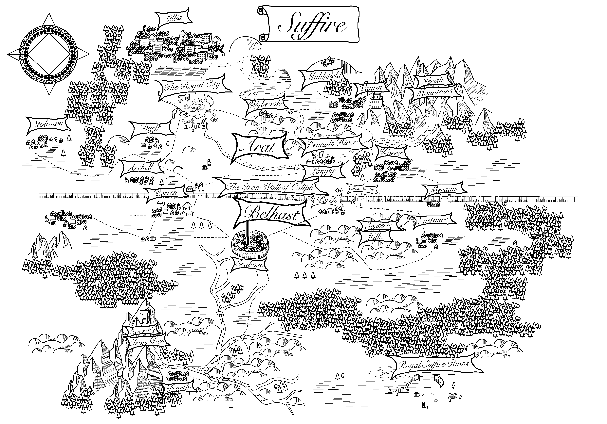

The Final Face
The Final Face is an audio adventure story about war, love, and bloody revenge. Tune in every Monday for new episodes. Listen to the first episode below.

Episodes
Behind the Face
The podcast is recorded in North Carolina and Arizona. Music by Sebastian Stark.
The Crew

Sebastian
Voice Actor and Audio Engineer

Katrina
Voice Actor

Michael
Website
Support the Podcast
This podcast is made possible by donations from our supporters. Use the links below to support the production.
- Buy the book on Amazon
- Buy me a coffee
© Sebastian's Stories